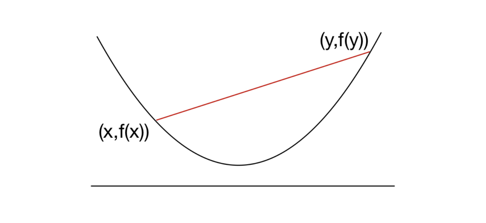
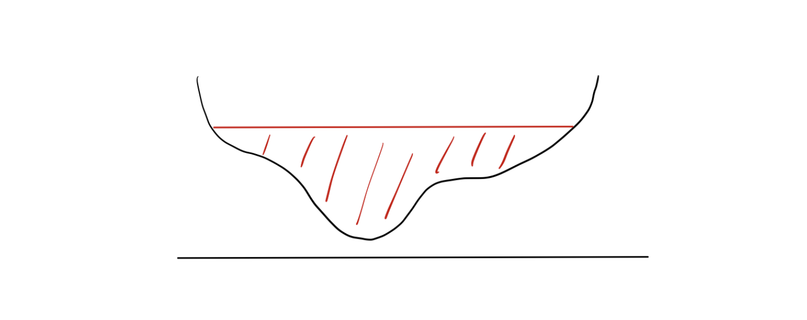

Introduction
지난 포스트에서는 Convex Set(볼록 집합)에 대해 다루었습니다. 이번 포스트에서는 최적화 이론의 핵심인 Convex Function(볼록 함수)에 대해 알아봅니다.
최적화 문제 \(\min f(x)\)에서 함수 \(f\)가 볼록 함수라면, 우리는 국소 최적해(Local Minima)가 전역 최적해(Global Minima)임을 보장받을 수 있습니다. 이 글에서는 볼록 함수의 수학적 정의와, 이를 더 엄격하게 제한하는 Strict/Strong Convexity, 그리고 다양한 예시들을 정리합니다.
1. Definition of Convex Functions
1.1 Basic Definition
함수 \(f: \mathbb{R}^d \to \mathbb{R}\)가 Convex(볼록)하다는 것은 정의역(Domain)이 볼록 집합이고, 기하학적으로는 함수의 그래프가 두 점을 잇는 선분보다 아래에 위치함을 의미합니다.
Definition 1.10 (Convex Function)
함수 \(f: \mathbb{R}^d \to \mathbb{R}\)의 정의역 \(\text{dom}(f)\)가 Convex Set이고, 임의의 \(x, y \in \text{dom}(f)\)와 \(0 \le \lambda \le 1\)에 대하여 다음 부등식이 성립할 때, \(f\)를 Convex Function이라 합니다.
\[f(\lambda x + (1-\lambda)y) \le \lambda f(x) + (1-\lambda)f(y)\]
이 부등식(Jensen’s Inequality의 가장 기초적인 형태)은 “두 지점 \(x, y\) 사이의 내분점에서 함숫값(좌변)”이 “두 함숫값 \(f(x), f(y)\)를 연결한 선분의 높이(우변)”보다 작거나 같아야 함을 의미합니다.

1.2 Variations of Convexity
Convexity의 개념을 조금 더 세분화하거나 반대 개념을 정의할 수 있습니다.
Definition 1.11 (Concave Function)
함수 \(f\)에 대하여 \(-f\)가 Convex라면, \(f\)를 Concave(오목)하다고 합니다. (부등호 방향이 반대가 됩니다.)
Definition 1.12 (Strict & Strong Convexity)
Strictly Convex: 등호(\(=\))가 성립하지 않는 경우입니다. 서로 다른 \(x, y\)와 \(0 < \lambda < 1\)에 대해: \[f(\lambda x + (1-\lambda)y) < \lambda f(x) + (1-\lambda)f(y)\] 그래프가 평평한 구간(flat region) 없이 둥글어야 합니다.
Strongly Convex: 함수가 2차 함수(\(x^2\))보다 더 가파르게 굽어있는 경우입니다. 어떤 \(\alpha > 0\)와 norm \(\|\cdot\|\)에 대해 다음 함수가 Convex이면 \(f\)는 Strongly Convex입니다. \[f(x) - \alpha \|x\|^2 \quad \text{is convex}\]
포함 관계 (Hierarchy): \[\text{Strongly Convex} \implies \text{Strictly Convex} \implies \text{Convex}\] 이 관계는 최적화 알고리즘의 수렴 속도(Convergence Rate)를 분석할 때 매우 중요하게 사용됩니다.
2. Examples of Convex Functions
강의 노트에서는 자주 사용되는 볼록 함수들을 변수의 차원에 따라 분류하여 소개합니다.
2.1 Univariate Functions (on \(\mathbb{R}\))
- Exponential: \(e^{ax}\) (모든 \(a \in \mathbb{R}\)에 대해 Convex)
- Power Function \(x^a\):
- \(a \ge 1\) 또는 \(a \le 0\): \(\mathbb{R}_{++}\)에서 Convex.
- \(0 \le a \le 1\): \(\mathbb{R}_{+}\)에서 Concave.
- Logarithm: \(\log x\)는 \(\mathbb{R}_{++}\)에서 Concave. (따라서 \(-\log x\)는 Convex)
- Negative Entropy: \(x \log x\) (또는 맥락에 따라 \(-\log x\))는 \(\mathbb{R}_{++}\)에서 Convex.
2.2 Multivariate Functions (on \(\mathbb{R}^d\))
- Linear Function: \(a^\top x + b\).
- Convex이면서 동시에 Concave인 유일한 함수 형태입니다. (등호가 항상 성립)
- Quadratic Function: \[f(x) = \frac{1}{2}x^\top A x + b^\top x + c\]
- 행렬 \(A\)가 Positive Semidefinite (\(A \succeq 0\))일 때 Convex입니다.
- Least Squares Loss: \(\| b - Ax \|_2^2\).
- 이는 \(A^\top A\)가 항상 Positive Semidefinite이므로 항상 Convex입니다.
- Norm: 임의의 Norm \(\|\cdot\|\)은 Convex입니다.
- 이유: 삼각 부등식(Subadditivity)과 양의 동차성(Homogeneity)에 의해 정의상 성립합니다.
- Max Eigenvalue: 대칭 행렬 \(X\)에 대해, 최대 고유값 \(\lambda_{\max}(X)\)는 \(X\)에 대한 Convex 함수입니다.
2.3 Constructing Convex Functions from Sets
집합의 성질을 이용해 정의된 특별한 함수들도 있습니다.
Indicator Function: Convex Set \(C\)에 대하여, \[I_C(x) = \begin{cases} 0, & x \in C \\ \infty, & x \notin C \end{cases}\] 이 함수는 \(C\)가 Convex일 때 Convex Function입니다. (제약 조건을 목적 함수에 포함시킬 때 유용)
Support Function: Convex Set \(C\)에 대하여, \[I_C^*(x) = \sup_{y \in C} \{ y^\top x \}\] 이는 \(x\)에 대한 선형 함수들의 상한(Pointwise supremum)이므로 항상 Convex입니다.
Conjugate Function (Fenchel Conjugate): 임의의 함수 \(f\)에 대하여, \[f^*(x) = \sup_{y \in \mathbb{R}^d} \{ y^\top x - f(y) \}\] 중요: 원래 함수 \(f\)의 Convex 여부와 상관없이, Conjugate function \(f^*\)는 항상 Convex입니다.
3. Properties: Epigraph & Level Sets
함수의 볼록성을 집합의 볼록성과 연결 짓는 두 가지 중요한 개념이 있습니다.
3.1 Epigraph (에피그래프)
함수 \(f\)의 그래프 위쪽 영역을 Epigraph라고 합니다.
Definition 1.13 (Epigraph) \[\text{epi}(f) = \{ (x, t) \in \text{dom}(f) \times \mathbb{R} : f(x) \le t \}\]
Theorem (Exercise 1.14): 함수 \(f\)가 Convex Function일 필요충분조건은 \(\text{epi}(f)\)가 Convex Set인 것입니다. \[f \text{ is convex} \iff \text{epi}(f) \text{ is a convex set}\]
Example 1.15: Norm function \(f(x) = \|x\|\)의 Epigraph는 \(\{(x,t) : \|x\| \le t\}\)입니다. 이는 지난 시간에 배운 Norm Cone이며, Norm Cone은 Convex Cone이므로 Norm function은 Convex function입니다.
3.2 Level Sets (등고선 집합)
함숫값이 특정 값 \(\alpha\) 이하인 영역입니다.
Definition (Level Set) \[S_\alpha = \{ x \in \text{dom}(f) : f(x) \le \alpha \}\]
Remark 1.16 * 만약 \(f\)가 Convex Function이면, 모든 \(\alpha\)에 대해 Level Set은 항상 Convex Set입니다. * 주의: 역은 성립하지 않습니다. Level Set이 모두 Convex라고 해서 그 함수가 반드시 Convex Function인 것은 아닙니다. (이런 함수를 Quasi-convex라고 합니다.)
아래 그림은 Level Set은 볼록하지만, 함수 자체는 볼록하지 않은(Non-convex) 반례를 보여줍니다.
